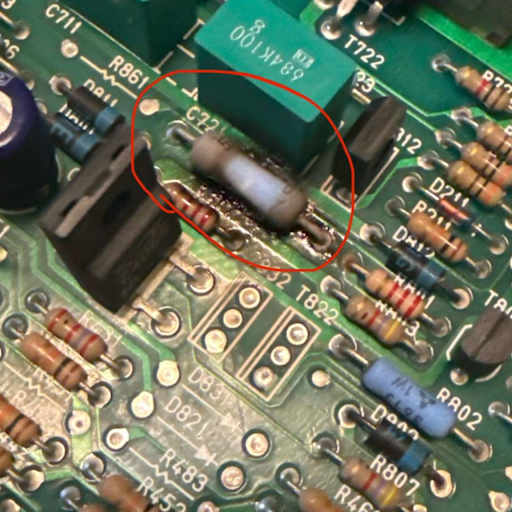

Day 9
Systematic Troubleshooting
Repair is not guessing. It is a logical process of elimination.
The Technician's Mantra:
1. Identify the Symptom
2. Isolate the Stage
3. Identify the Component
4. Verify the Fix
Pro Tip: "If you didn't measure it, you don't know it." Avoid assumptions at all costs.
Step 1: The "Sensory" Check
Before grabbing the DMM, use your eyes, nose, and ears.
- Look: Leaky capacitors, burnt resistors, or cracked solder joints.
- Smell: The ozone scent of "Magic Smoke" or fried silicon.
- Touch: Gently check for components that are running too hot (carefully!).

Obvious Visual Fault: Overheated Resistor
Divide and Conquer
Don't test every part. Break the circuit into functional blocks.
Input Stage
Is the power getting in? Check the fuse and the battery/jack.
Processing Stage
Are the transistors switching? Is the logic chip receiving a signal?
Output Stage
Is the LED, motor, or speaker actually connected to the ground?
Method: Test the middle. If signal is good in the middle, the fault is in the second half!
Top 3 Reliability Killers
1. Cold Solder Joints
A joint that looks "frosty" or cracked. It makes intermittent contact.
2. Electrolytic Caps
They dry out or bulge over time. The leading cause of power supply failure.
3. Blown Diodes
Usually caused by plugging in the wrong polarity power adapter.
Lab 9: Finding the "Planted" Fault
OBJECTIVE: Diagnose a broken circuit provided by the instructor.
- Power up the board and document the symptom.
- Trace the voltage from the input using your DMM.
- Identify if the fault is an Open (broken path) or a Short (accidental path).
- Mark the component for replacement.
Technician Tip: Use the "Beep" (Continuity) mode to find invisible cracks in copper traces.
Wrap Up
Day 9 Recap
- Logic First: Troubleshooting is a mental game before it's a physical one.
- Visuals: 50% of faults can be found just by looking closely.
- Isolation: Don't test the whole board; narrow it down to a single stage.
- The DMM: Use DC Volts to check for power, and Continuity to check for paths.
Tomorrow: THE CAPSTONE. No more hints—just you and the broken device.